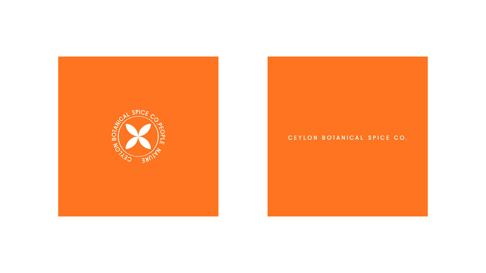
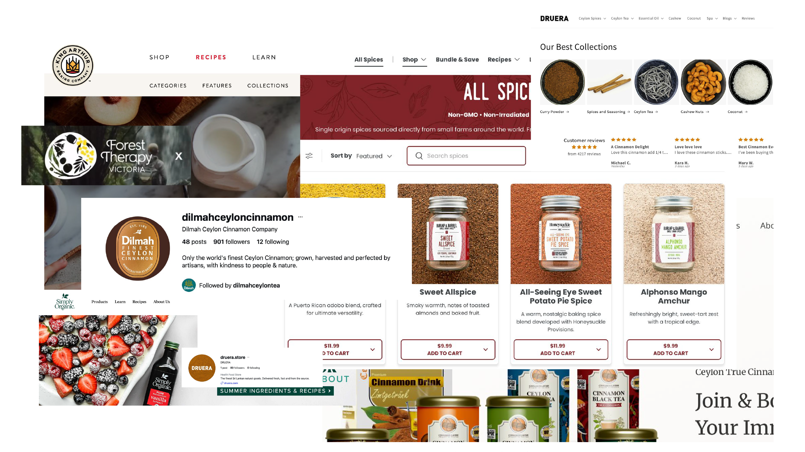
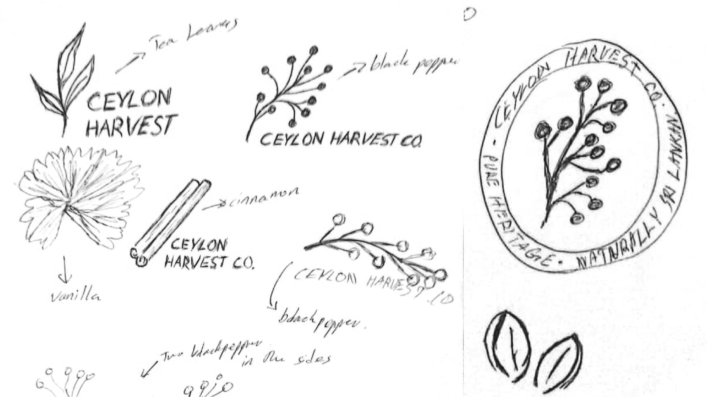
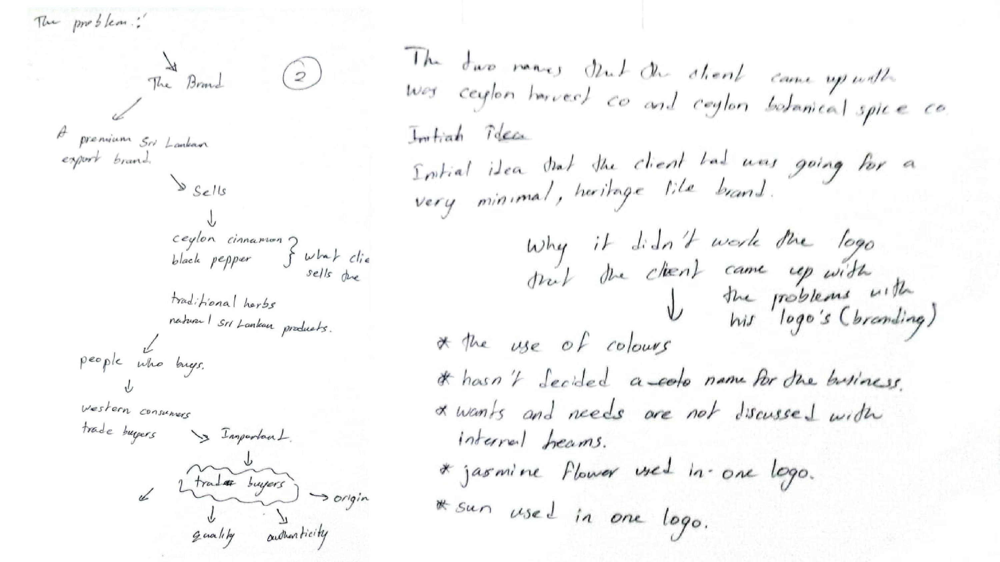
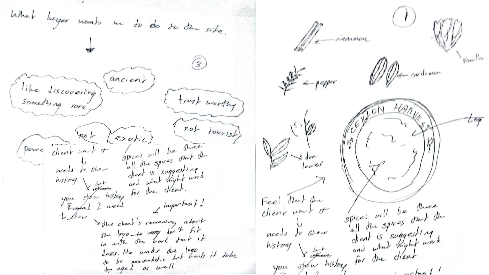
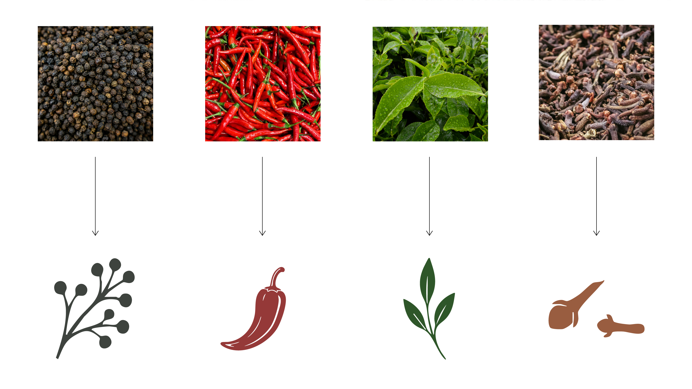
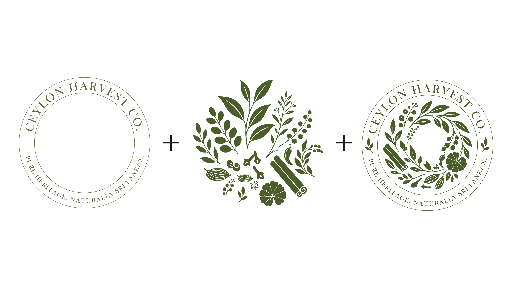
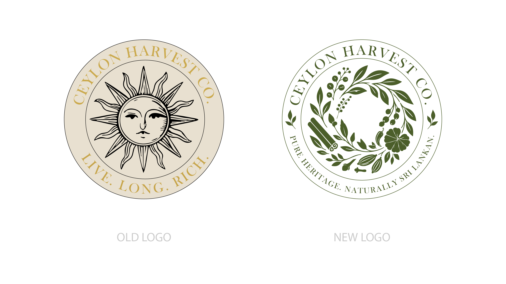

Ceylon Harvest Co.
A 3,000-year-old tradition, presented with modern premium confidence.

The finished identity: a botanical seal built entirely from the plants and spices Ceylon Harvest Co. actually exports.

Where I came in: the client's own concept. The client couldn't say what was wrong with it, only that it wasn't quite right.

Mapping the field: how Dilmah, Burlap & Barrel and other export-grade spice brands actually present themselves.
The client's logo used a sun face inside a seal, captioned "Live. Long. Rich." The drawing wasn't the issue. A sun is a universal symbol. It says optimism and warmth for a resort or a suncream just as easily as it does for a 3,000-year-old spice trade. It couldn't say Sri Lanka, and it couldn't say ancient. Naming that problem set the direction: move the mark from the sky to the soil.

First sketches: replacing the sun with tea leaves, black pepper, cinnamon and vanilla under a new name, Ceylon Harvest.

Working notes: choosing between two names, and listing exactly why the client's own attempt hadn't landed.

Turning the client's own words into a brief: ancient, trustworthy, quiet, not touristy. Then sketching straight from that list, ingredient by ingredient, toward a circular seal.

Every plant went through the same process: reference photo, essential silhouette, flat single-colour redraw. I repeated this for all eight ingredients in the final seal.

Assembly logic: wordmark ring plus botanical cluster, arranged into a single wreath.

Before and after: from a universal sun motif to a mark that could only belong to Sri Lanka.

The finished mark's anatomy, traced ingredient by ingredient.

Heritage Green, Raw Parchment, Cinnamon Bark, and Cracked Pepper, pulled from the spices themselves, not a stock "premium" palette.

Baskerville Old Face for history and weight, paired with Poppins for functional, modern packaging copy.

The final seal, in the two colourways used across packaging and stationery.

The seal as a wax-style stamp, testing whether the mark still reads once it loses colour and gets pressed into paper.

The botanical pattern, printed across a canvas tote.

The system on shelf: cardamom, in a paper tube with a gold lid.
The stationery suite is next up, not yet photographed.
For the same reason, space is held rather than skipped.